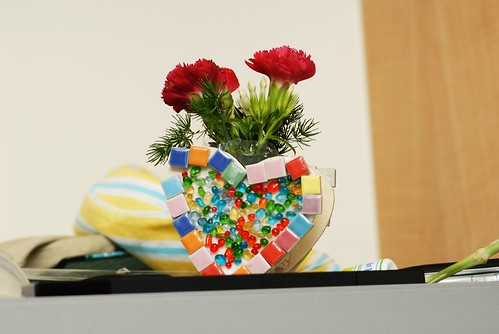
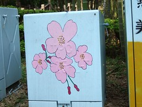
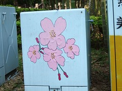
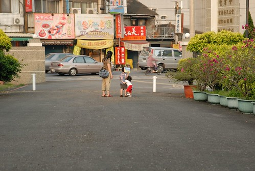

自己的懶惰加上天空部落的當機 遲了這麼久才宣告”母親節快樂”
這是阿徹送我的母親節禮物
當然也是學校的應景勞作之一
要帶回家的那天 阿徹在學校一看到我就嘟上來給我 說這是送我的禮物
然後開開心心 小心翼翼的幫我捧回家
途中小草不小心飛走還讓娘冒著生命危險在車水馬龍的大馬路邊逐草
等紅綠燈的空檔 阿徹坐在我的大腿上 小手逐一比著三朵花說 “這就是 我..愛…你”
聽的娘心頭蹦蹦跳了好幾下
想10年前 他爹送的第一次也是唯一一次的花也是三朵花
只是害羞的爹 把花藏在冰箱中被我意外發現後 並沒有這樣甜蜜蜜的”我愛你”
可見雙魚座的兒子還是略勝獅子座的老爸
母親節假期奔波於嘉義及新莊
該吃的飯沒有少 該煮的飯 該洗的衣服 該做的家事當然也都沒有少
但可以跟家人這麼聚在一起吃飯 話家常 就是大大的幸福
甚至夜晚站在東石的國小操場上 滿天星斗下 抱著小愛倚著阿徹看劇團表演
心頭的幸福更是滿到快要溢出來…
正逢叛逆期的阿徹 母親節的週末卻”異常”的乖
徹爸問他”這兩天怎麼這麼乖阿 “
阿徹說”因為今天是 mother’s day 阿”
最好真是這樣哩…也最好每天都是母親節
阿徹鏡頭下的媽媽
朦朧中依舊清晰可見媽媽厚厚的眼袋 細長的魚尾紋 以及那抵抗不了歲月刻痕卻又疏於保養的皮膚
也許就如很多人說的 看我照片一附有子萬事足的樣子
其實大家是在暗示 媽媽~該保養嚕
小心小王子有一天嫌棄我這老公主了
我的孩子 我的ㄤ~
希望我們用我們的雙腳 我們的心
一起走過 體會 分享這美麗的寶島台灣 甚至出國比賽得冠軍
用滿滿的相片 累積我們家的回憶與故事
讓我們為人公 為人婆 為人爸 為人母後 有說不完的故事給孫子小孩聽
 

希望我們一家能這麼永遠相互扶持 依靠

看到孩子的笑容就是母親節最豐富的禮物阿
這真的不是老生常談 也不是老王賣瓜 這真的是一個媽媽最真誠的感觸

我的ㄤ~ 看到你健健康康 快快樂樂也是我最在乎的一件事
為了不能比我早死 你要堅強 你要不挑食阿…
註:
週二下午其實寫過一次 可是按下儲存後不見了 才知道天空在搞烏龍
今日重寫怎麼越寫越在像交代遺囑 怪…
孩子的第一哩路 319鄉村兒童藝術工程
http://www.319kidsmile.org/charm.asp
歡迎大家踴躍響應 參加哩
http://www.wretch.cc/blog/haomei&article_id=7464357
對了 那天戲劇結束後主持人請觀眾幫忙把椅子疊高
當眾觀眾大家都彎腰幹活時 突然舞台後方想起迸迸迸的巨響
哇 天空好美麗…色彩繽紛 五彩奪目的煙火秀
剛開始以為應該只是像廟會熱鬧 象徵性的咻咻幾盒而已
但秀真的還挺長的 5分鐘有吧 而且真的挺好看的
從來沒有在這樣近的距離 抬頭仰望天空的煙火秀 很震撼很感動
而且像來很怕鞭炮 煙火聲音的阿徹竟然沒有被嚇哭 逃之夭夭
阿徹雙手掩著耳朵 目不轉睛的望著天空
我三不五時的望一下阿徹 深怕他會被嚇的晚上睡覺媽媽號
但在小子臉上除了看見一點的緊張外 我還看到了他嘴角上的笑容
接下來我放心的看完煙火秀 再也沒擔心阿徹…